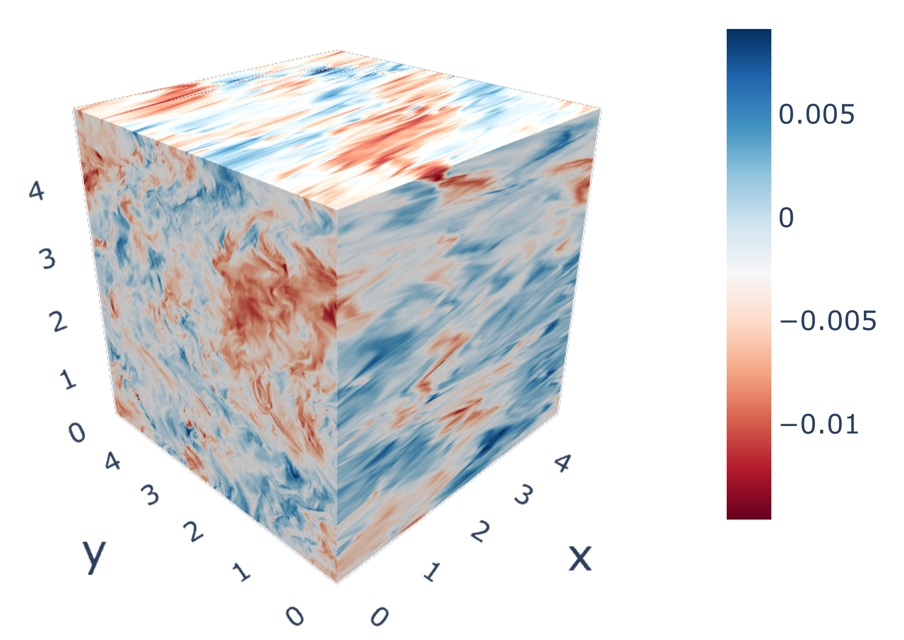

I work with Professor
Marco Velli and my research focuses on solar physics, especially
topics on solar wind turbulence and magnetic reconnection.
Research interests
[1] Origin of the solar wind
Solar wind is the hot and supersonic plasma flow that is ejected
from the solar atmosphere. It carries a significant amount of energy and causes various space weather events, e.g.
magnetic storms, when it hits the Earth's magnetetoshphere.
Where does the solar wind originate and how does it gain sufficient energy
to escape the solar gravity and reach a supersonic speed are still far from being completely understood.
I have been working on theories and modeling of the solar wind generation, including development of polytropic solar wind
model, and 1D simulations of a two-temperature (ion and electron temperatures) Alfvén wave driven solar wind.
[2] Solar wind turbulence
Turbulence is ubiquitos in the solar wind. It refers to the
fluctuations that span across a huge range of spatial and temporal scales. It is believed to be a major
energy source for the heating and acceleration of the solar wind.
My work focuses on the evolution of solar wind turbulence at MHD scales. By combining satellite observations and
numerical simulations, I analyze how the large-scale structures, including stream-interaction-regions (SIRs)
and heliospheric current sheet (HCS), affect the turbulence properties. Using Parker Solar Probe measurements,
I study the early-stage evolution of the turbulence and how the turbulence properties depend on the source of
the solar wind.
[3] Magnetic reconnection
Magnetic reconnection is a fundamental process in plasma. It happens between
anti-parallel magnetic field lines and converts the magnetic energy into the kinetic and internal energy of the plasma.
It is believed to be an important energy source for the coronal heating and solar wind acceleration and it is the key
process underlying different space weather phenomena.
To understand how reconnection happens explosively at MHD scales, I have
carried out theoretical and numerical studies of the stability problem of plasma current sheets. I analyze the growth of
linear tearing mode instability in the current sheets with different configurations and conduct numerical simulations of the
nonlinear evolution of the current sheets that are susceptible to the tearing mode instability.
Open-source MHD simulation codes I've been developing
[1] 2D code with open-periodic boundary condition (GitHub)
This is a 2D code that adopts Fourier transform based pseudo-spectral method in one dimension
and compact finite difference scheme in another dimention to calculate spatial derivatives. Thus open-pereiodic boundary condition is
implemented.

3D simulation of turbulence using the 3D MHD code we developed.
[2] 3D code with periodic boundary condition (GitHub)
This is a 3D code that adopts Fourier transform based pseudo-spectral method in all the
three dimensions to calculate spatial derivatives. It is very suitable for turbulence simulations.
My presentation on solar wind turbulence at High Altitude Observatory
Selected Publications
For a complete publication list, please refer to my CV
Proton and electron temperatures in the solar wind and their correlations with the solar wind speed, Chen Shi, Marco Velli, Roberto Lionello, et al., 2023, ApJ, 944, 82
Acceleration of polytropic solar wind: Parker Solar Probe observation and one-dimensional model, Chen Shi, Marco Velli, Stuart Bale, et al., 2022, PoP, 29, 12
Patches of Magnetic Switchbacks and Their Origins, Chen Shi, Olga Panasenco, Marco Velli, et al., 2022, ApJ, 934, 152
Instabilities in a current sheet with plasma jet, Chen Shi, 2022, JPP, 88, 4
Influence of the heliospheric current sheet on the evolution of solar wind turbulence, Chen Shi, Marco Velli, Anna Tenerani, et al., 2022, ApJ, 928, 93
Stability of the magnetotail current sheet with normal magnetic field and field-aligned plasma flows, Chen Shi, Anton Artemyev, Marco Velli, et al., 2021, JGR Space Physics, 126, 11
Alfvénic versus non-Alfvénic turbulence in the inner heliosphere as observed by Parker Solar Probe, Chen Shi, Marco Velli, Olga Panasenco, et al., 2021, A&A, A21, 12
Oblique Tearing Mode Instability: Guide Field and Hall Effect, Chen Shi, Marco Velli, Fulvia Pucci, Anna Tenerani & Maria Elena Innocenti, 2020, ApJ, 902, 2
Propagation of Alfvén waves in the expanding solar wind with the fast-slow stream interaction, Chen Shi, Marco Velli, Anna Tenerani, Franco Rappazzo & Victor Réville, 2020, ApJ, 888, 2
Fast Recursive Reconnection and the Hall Effect: Hall-MHD Simulations, Chen Shi, Anna Tenerani, Marco Velli & San Lu, 2019, ApJ, 883, 172
Marginal Stability of Sweet-Parker Type Current Sheets at Low Lundquist Numbers, Chen Shi, Marco Velli & Anna Tenerani, 2018, ApJ, 859, 83
Statistical analysis of intermittency and its association with proton heating in the near Sun environment, Nikos Sioulas, Marco Velli, Rohit Chhiber, et al., 2022, ApJ, 927, 140
Flux rope and dynamics of the heliospheric current sheet: Study of the Parker Solar Probe and Solar Orbiter conjunction of June 2020, Victore Réville, Naïs Fargette, Alexis Rouillard, et al., 2022, A&A, 659, A110
Evolution of switchbacks in the inner Heliosphere, Anna Tenerani, Nikos Sioulas, Lorenzo Matteini, et al., 2021, ApJL, 919, L31
Evolution of Solar Wind Turbulence from 0.1 to 1 au during the First Parker Solar Probe—Solar Orbiter Radial Alignment, Daniele Telloni, Luca Sorriso-Valvo, Lloyd D. Woodham, et al., 2021, ApJL, 912, L21
Tearing Instability and Periodic Density Perturbations in the Slow Solar Wind, Victor Réville, Marco Velli, Alexis P. Rouillard, et al., 2021, ApJL, 895, L20
Onset of fast magnetic reconnection and particle energization in laboratory and space plasmas, Fulvia Pucci, Marco Velli, Chen Shi, et al., 2020, Journal of Plasma Physics, 86(6), 535860601
The role of Alfvén wave dynamics on the large scale properties of the solar wind: comparing a MHD simulation with PSP E1 data, Victor Réville, Marco Velli, Olga Panasenco, et al., 2020, ApJS, 246, 2
Magnetic Field Kinks and Folds in the Solar Wind, Anna Tenerani, Marco Velli, Lorenzo Matteini, et al., 2020, ApJS, 246, 2
Exploring Solar Wind Origins and Connecting Plasma Flows from the Parker Solar Probe to 1 au: Nonspherical Source Surface and Alfvénic Fluctuations, Olga Panasenco, Marco Velli, Raffaella D'Amicis, et al., 2020, ApJS, 246, 2
The Geometry of an Electron Scale Magnetic Cavity in the Plasma Sheet, H. Liu, Q.-G. Zong, H. Zhang, et al., 2019, GRL, 46
Turbulence and Particle Acceleration in Collisionless Magnetic Reconnection: Effects of Temperature Inhomogeneity across Pre-reconnection Current Sheet, San Lu, V. Angelopoulos, A. V. Artemyev, et al., 2019, ApJ, 878, 109